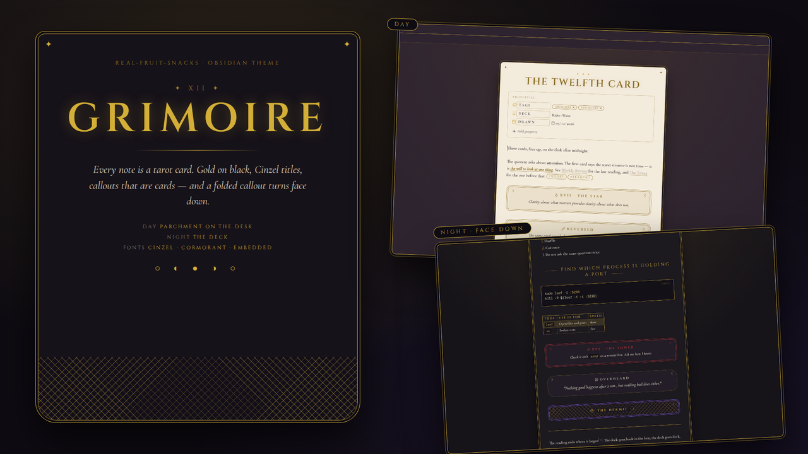
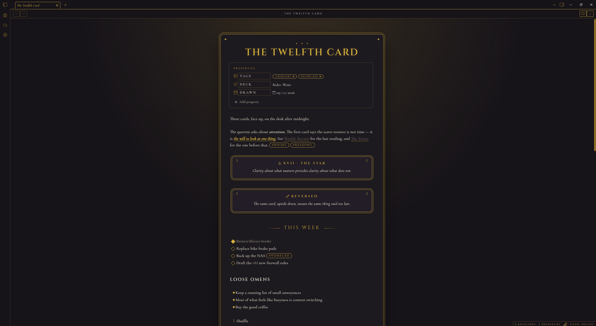
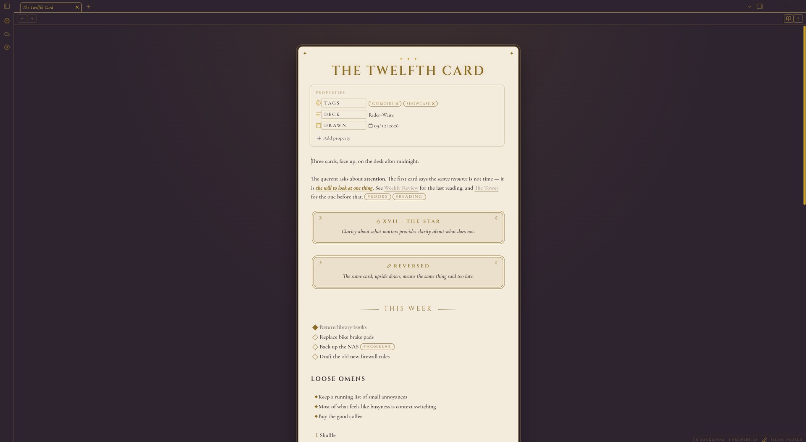

Gold on black, Cinzel titles, a double gold frame with stars in the corners — and one trick: fold a callout and it turns face down.

Obsidian's own components, dealt from a deck.
Callouts are cards — framed, centred, moons in the corners. Collapse one and it flips to a gold lattice card-back with the title on a label. Open it and the reading continues.
The title in gold with a soft glow under three stars; H2s centred between fading gold rules; Cormorant Garamond body. Both embedded.
Every note sits in a gold frame with an outer hairline, rounded top, deep-rounded bottom and stars in the corners, on a dark desk with a faint gold glow.
Diamond checkboxes that fill gold, oval tags and pills, italic gold highlights, Cinzel table headers and list numbers, code as a black page with gold type.
The explorer has Cinzel folder labels flanked by stars, italic file names, a gold-ringed active file and the phases of the moon at its foot.
Night is the black-and-gold deck. Day lays a parchment card on the same dark desk — sidebars and chrome stay night, only the card turns light.
Readable line length on — the card sits in the glow at the centre of the desk.


From the community list, or two files by hand.
theme.css and manifest.json from the latest release into .obsidian/themes/Grimoire/, then pick it under Appearance.> [!question]- The Hermit, switch to Reading view, and watch the card turn face down..obsidian/
themes/
Grimoire/
theme.css
manifest.jsonDesk, card, ink, and gold.
| Role | Night | Day |
|---|---|---|
| Desk | #0E0B12 | #2A1F2C |
| Card | #161219 | #F3ECDD |
| Ink | #EAE2D0 | #241A1F |
| Gold | #D4AF37 | #8C6D1F |
| Red | #C8323F | #8E1B25 |
| Plum | #8B5CF6 | #6D3FB8 |
Same site, a different glow per project.